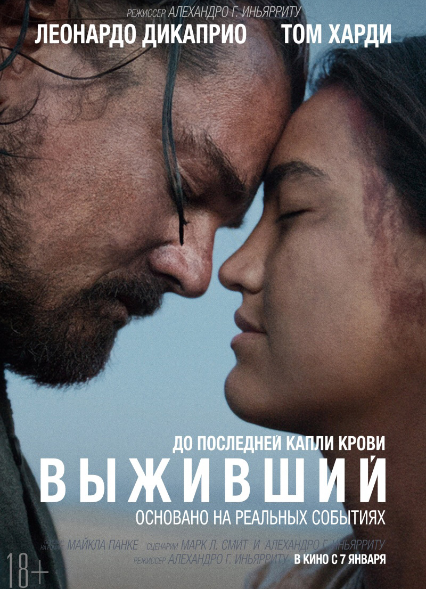

Выживший
IMDb: /

«Вы́живший» (англ. The Revenant) — американский эпический остросюжетный вестерн 2015 года режиссёра Алехандро Г. Иньярриту. Адаптированный сценарий по одноимённому роману Майкла Панке 2002 года был написан Иньярриту и Марком Л. Смитом и частично основан на жизни маунтинмена Хью Гласса. Главные роли исполнили Леонардо Ди Каприо и Том Харди. Фильм был представлен в двенадцати номинациях на премию «Оскар», в трёх из которых одержал победу. За эту роль Леонардо Ди Каприо был удостоен своей первой премии Американской Киноакадемии.